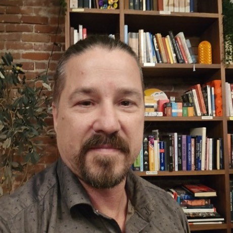

Brian Oney · Partner-Ecosystem Architect
There are two languages in every technology project: the one engineers speak — and the one your people actually live in.
I'm fluent in both. I design AI that grows into the infrastructure you already have, until it feels like a native part of your brand — not something bolted on from the outside.

Brian Oney
Strategic Infrastructure AI Architect
The approach
Tend what's already there. Don't replace it — cultivate it.
What I actually do
A Strategic Infrastructure AI Architect
In plain terms: I design AI that integrates into the infrastructure you already run, and I customize it closely enough that it feels native — not a generic tool wearing your logo.
Same architecture underneath. A completely different home on top. I've personally built systems that adapt across wildly different organizations and customize fast enough to feel like they were always yours.
Who I build for
The people most "AI solutions" skip past
You don't need a 200-page transformation roadmap. You need something that works inside your world, in your voice, and respects the way you already do things — by next week, not next year.
- Small & midsize businesses
- Leaders
- Trainers
- Coaches
- Nonprofits
- Tutors
Why this is different
My foundation isn't only technical. It's sociology.
Specifically symbolic interactionism — the study of how people make meaning together. It left me a little obsessed with how organizations actually function at the human level: why your clients choose you, and why they refer others to you.
People don't buy systems.
They buy trust, meaning, and recognition. The technology only matters if it carries those across.
They refer you when the story is worth passing on.
If the infrastructure underneath doesn't protect that story, it doesn't matter how clever the code is.
How it's built
Grown in, not bolted on
A grafted branch heals into its rootstock until sap flows across the join and you can't tell where one begins and the other ends. That's the standard I build to.
I design for both layers at once — the technical one that has to run, and the human one that has to feel right.
A confession
I speak the Common Tongue
I understand tech design — but I refuse to hide behind it. (Forgive the nerd in me: as a Lord of the Rings and Critical Role fan, I can't help calling plain human language the Common Tongue.)
Think of it like running a good campaign. I build the world and the systems beneath it, so you and your people are free to be the heroes inside it. You shouldn't have to learn my language to get value from my work — I'll meet you in yours.
Roll for initiative. 🎲
Been told AI is too complex, too generic, or too cold for what you do?
Let's talk. I build the kind that fits.
Start a conversation